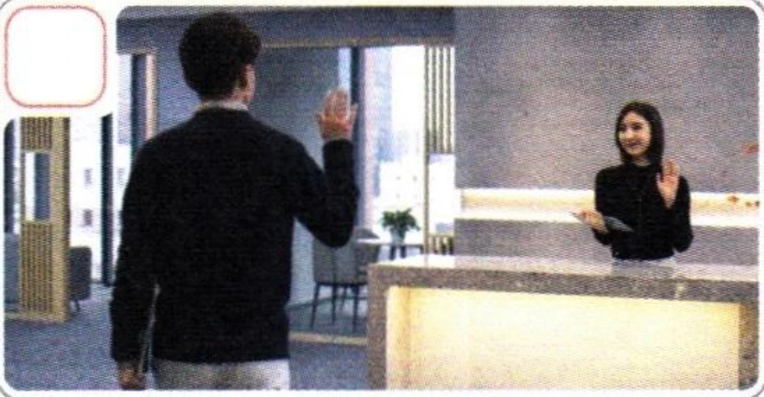
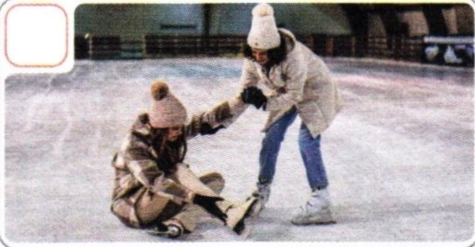
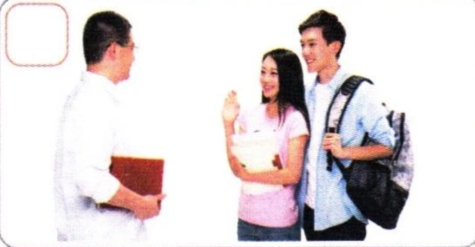

1听录音，朗读音节。Listen and read the syllables aloud.Прослушайте и прочитайте слоги вслух.
2听录音，写出听到的声母并大声朗读。Listen, write down the initials you hear, then read aloud.Прослушайте, запишите инициали, которые вы слышите, затем прочитайте вслух.
àěiánùǎiěngóǎoóngěnānōuèǐáng
3听录音，写出听到的韵母并大声朗读。Listen, write down the finals you hear, then read aloud.Прослушайте, запишите финали, которые вы слышите, затем прочитайте вслух.
thmdfdhgpgkfnlb
4听录音，写出听到的声调并大声朗读。Listen, mark the tones you hear, then read aloud.Прослушайте, отметьте тоны, которые вы слышите, затем прочитайте вслух.
laonenggebafenkanbailigongmanggouhou
5看图片，选择正确的对话。Look at the pictures and choose the correct dialogue.Посмотрите на картинки и выберите правильный диалог.


